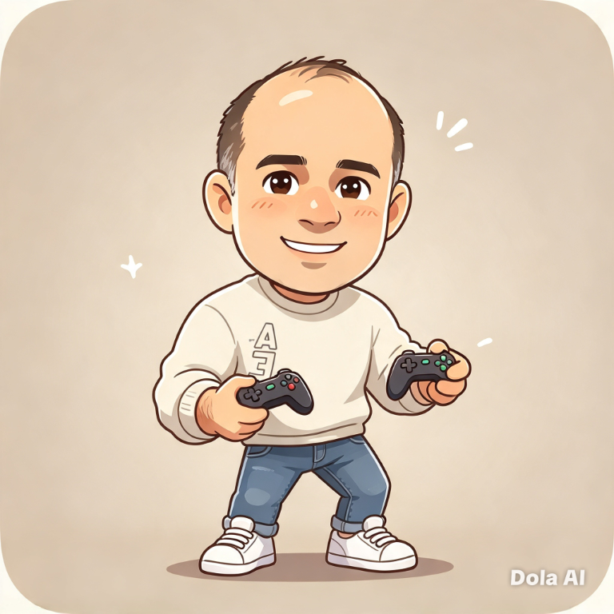

01 / 04
Mundo gamer
Que cuidarte también sea parte de tu partida, no el final del juego.
- Equilibrar los juegos con la salud
- Pausas activas, postura, descanso y energía
- Historias de gamers 40+ que siguen disfrutando
Un comienzo real, sin atajos
Un gamer de 40+ aprendiendo a cuidarse. Sin fórmulas mágicas, con los pies en la tierra y el control en la mano.

Mucho gusto, soy
El de la mezclilla,
los tenis blancos y
el control en la mano.
Tengo 42 años, mido 1.60 m, peso 90 kg y siempre visto pantalón de mezclilla, playeras, sudadera y tenis blancos. Soy desarrollador de sistemas, analista y líder de proyectos. Estoy en una etapa de transición profesional y busco una oportunidad para volver a dedicarme a lo que más me gusta. Mientras tanto, quiero empezar por algo importante: cuidarme, tener más energía y construir hábitos que me ayuden a vivir más tiempo y con salud.
No soy experto. No tengo cuerpo perfecto. Estoy justo empezando, igual que muchos de ustedes. Aquí no hay mentiras ni soluciones mágicas: compartiré lo que aprendo, lo que me cuesta y lo que voy logrando, paso a paso, sin dejar de jugar y sin gastar fortuna.
Toty — Jugando, avanzando y cuidándonos juntos
Cuatro formas de avanzar
Cada quien tiene su camino. Estos son los temas que quiero explorar contigo, sin presión y a nuestro ritmo.
Que cuidarte también sea parte de tu partida, no el final del juego.
Ideas para sentirte bien, sin vaciar la cartera ni despedirte del sabor.
Empezar donde estás también cuenta. No hace falta equipo ni perfección.
Porque cuidarte no tiene edad, y también mereces hacerte un espacio.
Sin filtros. Sin prisa.
Por ahora me conoces así. En tres meses compartiré mi rostro real, mis avances y mi proceso completo. Nada se oculta, todo se comparte. Avancemos juntos.
Las buenas partidas se juegan en equipo
Cuando tengamos comunidad activa, recibiré a entrenadores, nutriólogos, gamers y personas con historias reales que nos enseñen más. Por ahora avanzamos juntos.
Si te nace, gracias
Si lo que comparto te acompaña, puedes hacer una aportación voluntaria para que siga creando contenido, construyendo este espacio y trayendo a personas que nos enseñen. Aquí nadie te juzga y todos avanzamos juntos. No hay rendimientos prometidos, solo gratitud por compartir este viaje.
Enlace de apoyo próximamente Voluntario · Sin promesas · Con gratitudLa comunidad se construye contigo
No hay comentarios públicos aquí. Si quieres compartirme algo, saludar, contarme tu experiencia o proponer algo, escríbeme directo a:
twinsteamgamer@gmail.comGracias por caminar conmigo 💜